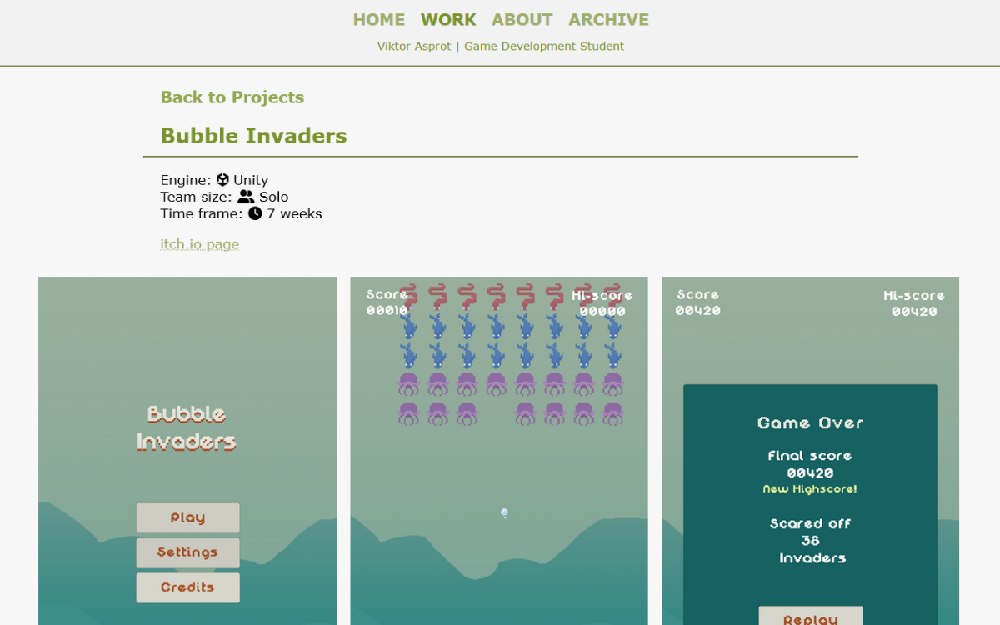
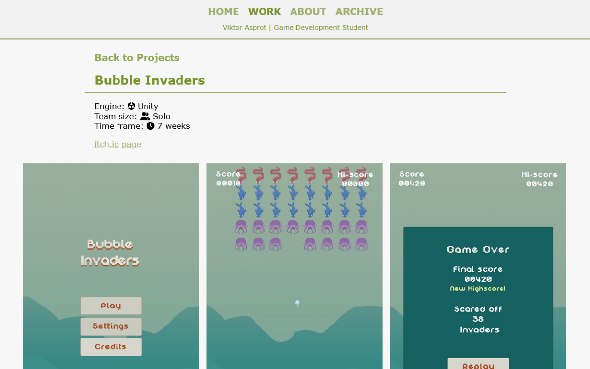
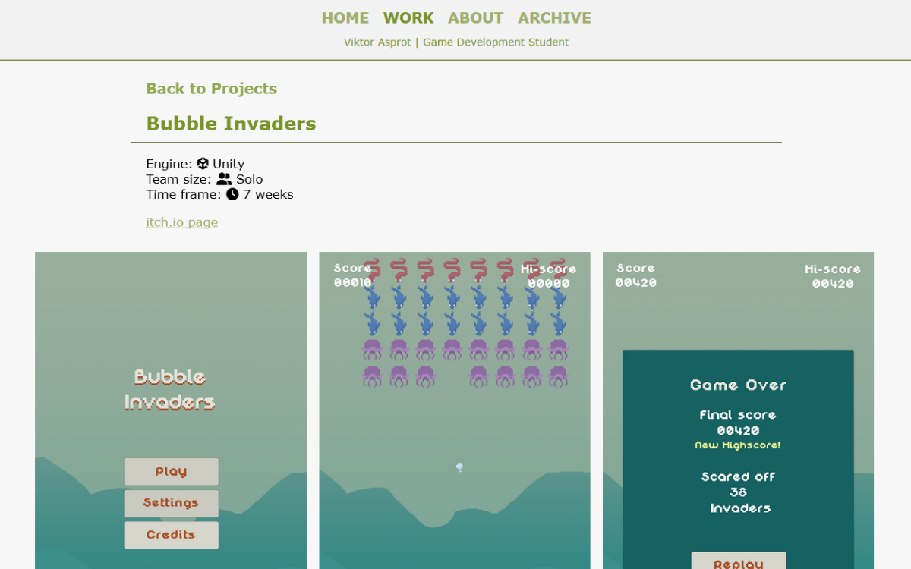

Photos from various parts of my site. The good, the bad, and the ugly.
NOTE: none of the images have alt text at the moment! sorry!!
My current site! One pager, darkmode, and just everything listed out. Somewhat inspired by websites of researchers, where all their papers are listed in one LOOOONG line. Also heavily inspired by a coder from Seattle who had a really cool site! I have to find them again and credit them.
One pager with plenty of space between sections. Had a dynamic(-ish?) projects section that took the information from a JavaScript object with JSON formatting. Unfortunately I don't have many images from this time at the moment. Could go back and download the code as it was during this phase, as it's available in the Git history.
Rounder, "bubblier" version of my site. Still formatted very similarly to the first version.
The very first rendition of my website.
